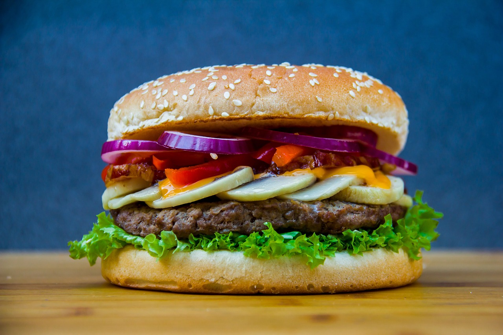

The Perfect Basic Burger

These burger patties are made with ground beef and an easy bread crumb mixture. Nothing beats a simple hamburger on a warm summer evening. Pile these burgers with your favorite condiments and pop open a cool drink!
Ingredients:
- 1 large egg
- ½ teaspoon salt
- ½ teaspoon ground black pepper
- ½ kg ground beef
- ½ cup fine dry bread crumbs
Directions
- Preheat an outdoor grill for high heat and lightly oil grate.
- Whisk together egg, salt, and pepper in a medium bowl.
- Add ground beef and bread crumbs and mix with your hands or a fork until well blended.
- Form into four 2cm-thick patties.
- Place patties on the preheated grill. Cover and cook 6 to 8 minutes per side, or to desired doneness.